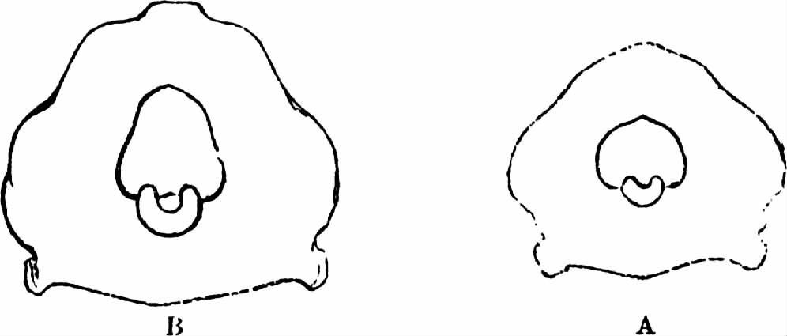
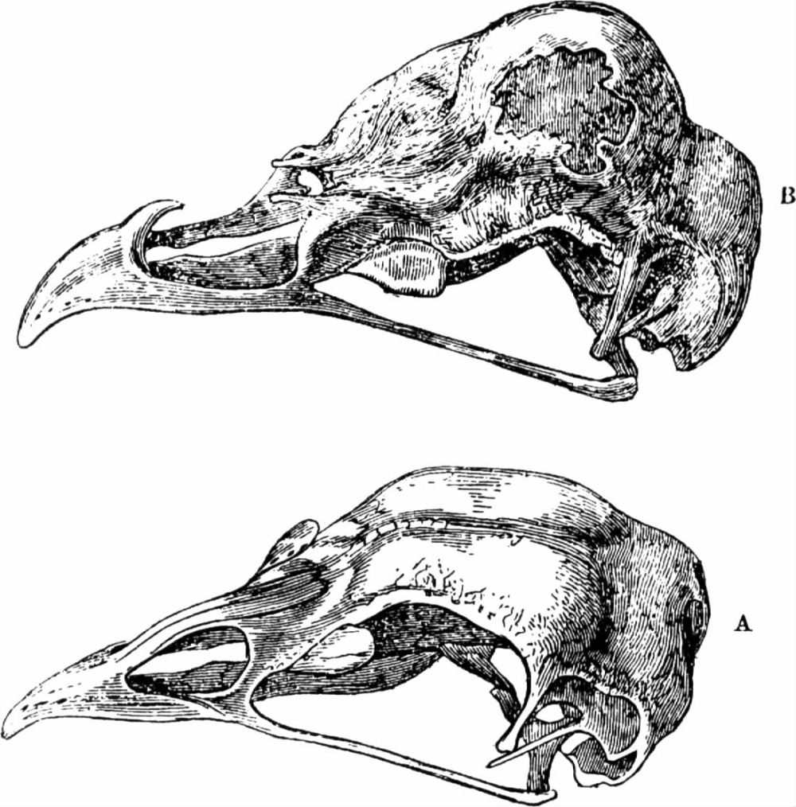
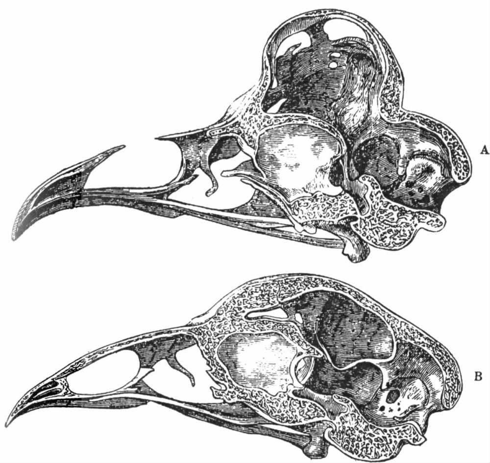
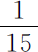
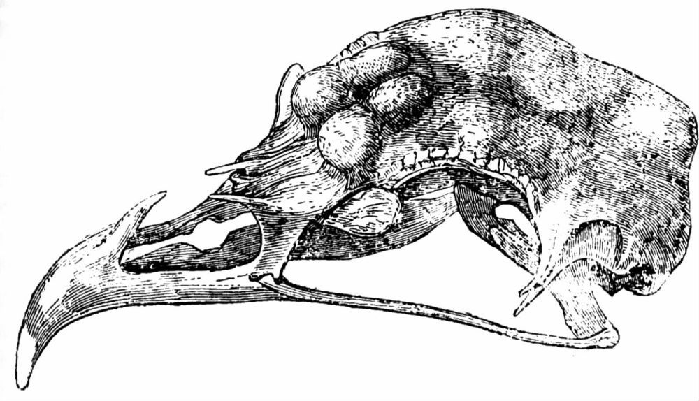
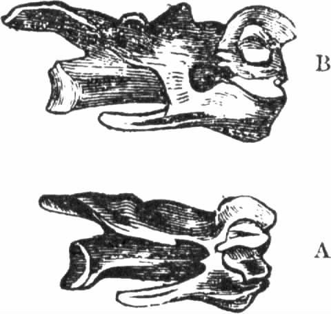
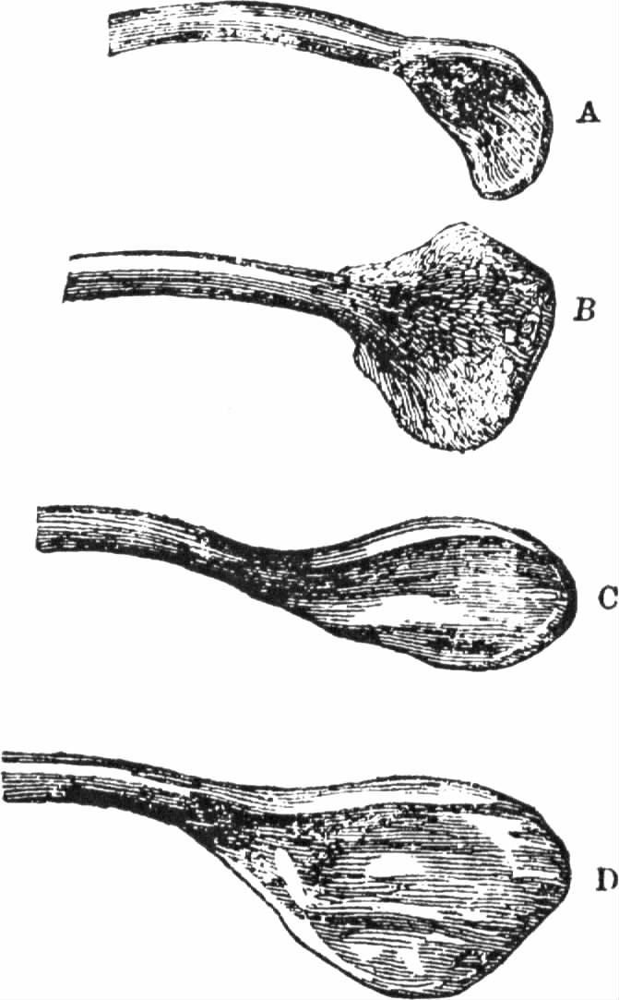

不同性别相联系的品种间以及个体间的外部差异
体部在大小上差异很大。推葛梅尔先生已经晓得“勃拉玛鸡”的重量为17磅；一只优良的公马来鸡为10磅；而第一流的塞勃来特·班塔姆鸡的重量几乎没有超过1磅的。最近二十年以来，我们的某些品种的大小由于有计划的选择而大大增加了，同时其他品种的大小则大大缩小了。我们已经看到，即便在同一个品种中颜色的变异是多么大；我们知道野生原鸡在颜色方面只有轻微变异；我们知道在所有我们的家养动物中颜色是容易变异的；尽管如此，一些卓越的养鸡者对于变异性的信心还是如此之小，以致他们实际上还在争论说那些除了颜色以外在其他方面并没有差异的主要斗鸡亚品种是从不同的野生种传下来的！杂交往往会引起颜色的奇妙改变。推葛梅尔先生告诉我说，如果淡黄色交趾鸡同白色交趾鸡杂交，在雏鸡中几乎不可避免地要有一些是黑色的。按照勃连特先生的材料，黑色交趾鸡同白色交趾鸡杂交，有时会产生石板青色的雏鸡；并且推葛梅尔先生告诉我说，白色交趾鸡同黑色西班牙鸡杂交，或者白色道根鸡同黑色小型西班牙鸡杂交[1]，也会产生石板青色的雏鸡。一位优秀的观察者[2]说道，有一只第一流的母银色点斑汉堡鸡逐渐失去了这个品种的特征，因为它的羽毛的黑色边缘消失了，并且它的腿从铅青色变成为白色：但使这个例子引人注意的却是，这种倾向已经渗入到血统中，因为它的姐妹同样地、但程度较轻地发生了变化；同时由后述这只母鸡产生出来的雏鸡最初几乎都是白色的，“但是脱换羽毛之后，它便变成黑色的了，并且长出一些点斑的羽毛，不过这些点斑几乎已经消失而模糊不清了”。所以一个新变种就这样奇妙地发生了。不同品种的皮在颜色上有很大差异，普通种类是白色的，马来鸡和交趾鸡是黄色的，丝羽鸡是黑色的；因此，像高德龙[3]所评述的那样，这模拟了人类的三个主要类型的皮肤。同一位作者又说道，因为不同种类的鸡生活在遥远的和隔离的各地，具有黑皮和黑骨，所以这种颜色一定在不同时代和不同地方曾经出现过。
体部的形状和步态，以及头的形状，有很大差异。喙的长度和钩曲度有微小变异，其差异远不如在鸽子的场合中那样厉害。在大多数具有羽冠的鸡中，鼻孔呈现一种显著的特点，即它的轮廓是新月形的并且是隆起的。交趾鸡的初级飞羽是短的；一只公交趾鸡的重量一定有原鸡的重量的两倍以上，而二者的初级飞羽在长度上则是一样的。我在推葛梅尔先生的帮助之下，曾经数过13只不同品种的公鸡和母鸡的初级飞羽；其中有4只——2只汉堡鸡、1只交趾鸡和1只班塔姆斗鸡——的初级飞羽是10支，而不是正常的数目9支；但是当我数这些羽毛时，我追随了养鸡者们的计算方法，我没有把刚刚四分之三英寸长的第一小初级飞羽计算在内。初级飞羽在相对长度上有相当的差异，第四支或第五支，或第六支，是最长的；第三支同第五支相等，或者比第五支短了许多。在野生鸡类的物种中，主翼羽和尾羽的相对长度以及数目是极其固定的。
尾在直立性和大小上有很大的差异，马来鸡的尾小，交趾鸡的尾很小。在我检查过的那13只不同品种的鸡中，有五只的尾羽数目是正常的，为14支，在这14支尾羽中包含有两支中央镰刀形尾羽；其他六只（公开弗尔鸡、公金色点斑波兰鸡、母交趾鸡、母萨尔坦鸡、母斗鸡、母马来鸡各一只）的尾羽为16支；还有两只（一只老公交趾鸡和一只母马来鸡）的尾羽为17支。无臀鸡没有尾，并且我拥有的一只没有油腺，这只鸡的尾骶骨（coccyges）虽然极不完备，但有尾的痕迹，它在外尾羽的位置上生有两支稍微长一点的羽毛。这只鸡来自这样一个家庭，据说这个品种在那里已经纯粹地繁育了20年；不过无臀鸡常常产生有尾的雏鸡[4]。一位卓越的生理学者[5]最近曾经谈到这个品种是一个不同的物种；如果他检查过尾骶骨的残缺状态，他决不会作出这样的结论的；他大概误信了在一些著作中曾经说过的无尾鸡在锡兰是野生的那种叙述；但是精密研究过锡兰鸟类的雷雅得先生和开拉尔特博士向我肯定地说，这种叙述是完全错误的。
跗在长度上有相当的变异，同野生原鸡相比，西班牙鸡和卷毛鸡的跗在同腿节（femur）的比较下是相当长的，而丝羽品种和班塔姆品种的跗则较短；不过原鸡的跗，像我们已经看到的那样，在长度上有变异。跗常常生有羽毛。许多品种的脚生有多余趾。据说金色点斑波兰鸡[6]的趾间的皮很发达：推葛梅尔先生观察过一只有这种情形，但我检查过的一只并不是这样。霍夫曼（Hoffmann）教授送给我一张吉森（Giessen）的普通品种的鸡脚的绘图，它在三个趾间生着蹼，蹼长约为趾的三分之一。交趾鸡的中趾据说[7]比侧趾几乎长二倍，所以远比原鸡的或其他鸡的长，但我检查过的两只并不是这样。这个品种的中趾的趾甲是非常宽而扁平的，不过在我检查的两只中其程度是不同的，趾甲这种构造在原鸡中只留有一点痕迹。
狄克逊先生告诉我说，鸣声几乎在每一个品种中都有微小的差异。马来鸡[8]的鸣声高、深沉而且拉得颇长，不过个体之间有相当的差异。赛克斯上校说，在印度饲养的公库尔姆鸡（Kulm cock）的鸣声不像英国鸡的鸣声那样尖锐而嘹亮，“它的音阶似乎受到更大的限制”。虎克（Hooker）博士对于公锡金（Sikhim）[9]鸡的“长而噑吠般的尖锐鸣声”感到惊奇[10]。交趾鸡和普通公鸡鸣叫得不一样是闻名的而且可笑的。不同品种的性情是广泛不同的；从斗鸡的野蛮而好斗的脾气一直到交趾鸡的极端平和的脾气。有人肯定地说：“交趾鸡所吃的野草的范围远比其他任何变种都大。”任何品种都比西班牙鸡耐寒。
在我们讨论骨骼之前，注意一下诸品种同原鸡有多大程度的差异是必要的。有些作者认为西班牙鸡是区别最大的品种之一，而且一般的外貌也是如此；不过它的特征上的差异并不是重要的。在我看来，马来鸡似乎区别得更大，因为它的体材高，尾小而下垂并且具有14支以上的尾羽，同时它的肉冠和肉垂小；尽管如此，还有一个马来鸡的亚品种在颜色上几乎同原鸡完全一样。某些作者认为波兰鸡是有很大区别的；但是它的具有突起的和不规则孔眼的头骨表明了它是一个半畸形的品种。交趾鸡在所有品种中大概是区别最大的，因为它的额骨具有深的沟，枕骨孔的形状特别，翼羽短，尾短并且具有14支以上的尾羽，中趾的趾甲宽，羽衣柔软得像绒毛，卵粗糙并呈暗色，特别是它的鸣声特殊。如果有任何一个我们的品种是从某一个不同于原鸡的未知物种传下来的话，那么这个品种大概就是变趾鸡；但是斟酌证据的结果，并不有利于这种观点。交趾品种的所有特征上的差异或多或少都是容易变异的，而且在其他品种中也可以找到这些差异，虽然其程度有大有小。我们的交趾鸡的一个亚品种在颜色上同原鸡密切相似。脚生羽毛，常常具有多余的趾，翅膀不能用于飞翔，性情极端安静，这表示了长期被家养的过程；而且交趾鸡是来自中国的，我们知道在那里植物和动物长久以来就受到了非常细心的管理，因而我们可以希望在那里发现深刻改变了的家养族。
骨骼上的差异 我曾检查过27只不同品种的骨骼和53只不同品种的头骨，其中包含有三只原鸡：这些头骨的将近一半是蒙推葛梅尔先生赠送的，其中有三只骨骼是伊顿先生赠送的，谨此致谢。
不同品种的头骨在大小上有重大差异，最大型的交趾鸡的头骨长度为班塔姆鸡的二倍，但其宽度则不到后者的二倍。在所有头骨中，从枕骨孔到头骨前端的底面之骨（包含有方骨和翼状骨）在形状上都是绝对一样的。下颌骨也是如此。雌雄两性的额骨往往有看得出的微小差异，这显然是由于肉冠的存在与否而引起的。在每一个场合里我都用原鸡的头骨作为比较的标准。四只斗鸡、一只母马来鸡、一只公非洲鸡、一只马得拉斯公卷毛鸡、两只乌骨丝羽鸡没有值得注意的差异。在三只公西班牙鸡中，眼窝之间的额骨形状有相当的差异；一只是相当扁平的，其他二只则稍微突出并且正中有一深沟；母西班牙鸡的眼窝之间的额骨是平滑的，在赛勃来特·班塔姆鸡的三个头骨中，顶骨比原鸡的为圆，并且达到枕骨的倾斜度较急。在一只缅甸的班塔姆鸡或跳鸡中，这等同样的性状表现得更加显著，而且上枕骨更尖。一只黑色班塔姆鸡的头骨并不那样圆，枕骨孔很大，并且同就要谈到的交趾鸡的枕骨孔几乎一样，呈准三角形；在这个头骨中，前颌骨的两个上升枝由于鼻骨的突出而奇妙地重叠在一起，但是，因为我只检查过一个标本，所以在这等差异中可能有些是个体的差异。关于交趾鸡和勃拉玛鸡（后者是一个杂交族，同交趾鸡密切接近），我检查七个头骨；前颌骨的上升枝同额骨相接合的那一点的表面是非常凹陷的，在这个洼的正中有一条深沟伸向后方，其长度随个体而异；这个沟的边缘稍微隆起，其高度有如眼窝以后和以上的头骨顶部。这等性状在母鸡中比较不发达。翼状骨以及下颌骨的突起在同头部大小的比例上，比原鸡的为宽；在大型的道根鸡中，情形也是如此。在交趾鸡中，舌骨的分叉比在原鸡中宽二倍，而舌骨其他部分的长度只为三与二之比。但是，最显著的性状是枕骨孔的形状：在原鸡（A）中，水平线上的宽度超过了垂直线上的高度，而且它的轮廓是接近圆形的；而在交趾鸡（B）中，枕骨孔的轮廓是准三角形的，并且垂直线比水平线长。在上面谈到的黑色班塔姆鸡中也有同样的形状发生，在某些道根鸡中可以看到近似的形状，在某些其他品种中也有这种情形，不过其程度较轻。

图33 枕骨孔
A．野生原鸡；B．公交趾鸡
关于道根鸡，我检查过三个头骨，其中一个是属于白色亚品种的；值得注意的一个性状是额骨的宽度，在它的正中有适度的沟；例如一个头骨的长度比原鸡的短一倍半，而其眼窝之间的宽度恰为原鸡的二倍。关于汉堡鸽，我检查过条班亚品种的四个头骨（雄性的和雌性的）和点班亚品种的一个头骨（雄性的）；它们的鼻骨显著地分开，但其分开的程度不同；因而在稍微短一些的前颌骨的两个上升枝顶端之间，以及在这等上升枝和鼻骨之间，留下了狭小的被膜的间隔。同前颌骨的上升枝相接合的额骨表面凹陷得很小。这等特性无疑同作为汉堡鸡的特征的宽而扁平的蔷薇肉冠有密切关系。

图34 头骨正面图（稍斜）
A．野生原鸡；B．具有白色羽冠的公波兰鸡
我还检查过波兰鸡的以及其他具有羽冠的品种的14个头骨。它们的差异是异常的。先谈一谈英国的波兰鸡的不同亚品种的头骨。在附图中大概可以看清楚额骨的半球形隆起[11]，（B）是具有白色羽冠的波兰鸡的头骨，系正面斜视图，（A）是原鸡的头骨，位置同上。图35系波兰鸡头骨的纵断面图；还刊载了同等大小的交趾鸡头骨的纵断面图，作为比较。在所有波兰鸡中，额头隆起所在的位置都是一样的，不过其大小有很大差异。在我的九个标本中，有一个额骨隆起是极其微小的。隆起的骨化程度有巨大差异，骨的某些部分或大或小地由膜代替了。在某一个标本中只有一个开着的孔；一般则有许多各种形状的开着的孔隙，骨形成了不规则的网状。一般都保存有正中线上的纵弧状骨带，不过在一个标本中，整个隆起没有一点骨头，当把这个头骨洗干净之后，从上面来看，它就像一个水盆似的。头骨整个内部形状的变化之大是可惊的。脑子，如在那两个纵断面图中所表明的，相应地发生了值得加以深入考察的改变。头骨可以分为三部分，上前部分的腔有很大改变；在同等大小的交趾鸡头骨中这个腔显然是比较大得多的，而且超出眼窝中隔向前伸出得很多，不过侧面的深度比较浅。推葛梅尔先生告诉我说，这个腔完全充满了脑髓。在交趾鸡的和所有普通鸡的头骨中，有一条显著的内侧的骨隆起线把前腔和中央腔分开；但是在这里绘出的波兰鸡的头骨中，这条隆起线已经完全不存在了。在波兰鸡中，中央腔的形状是圆的，在交趾鸡的头骨中则是细长的。在这两个头骨中、后腔的形状、位置、大小以及神经通过的孔眼的数目，有很大差异。有一个纹孔深深地贯穿了交趾鸡的枕骨，但这个波兰鸡的头骨就完全没有这个纹孔，而在另一个标本中它却很发达。在这第二个标本中，后腔的整个内部表面在形状上同样有某种程度的差异。我还切断过其他两个头骨——一是波兰鸡的头骨，它的隆起奇怪地不发达，一是萨尔坦鸡的头骨，它的隆头比较发达一点；当把这两个头骨放在下面两个图（图35）之间时，便可在内部表面的各个部分的形状上追踪出一个完全的级进。在具有小型隆起的波兰鸡的头骨中，前腔和中央腔之间的隆起线是存在的，但低陷；在萨尔坦鸡的头骨中，这条隆起线由一条位于宽阔隆起上面的狭窄的沟代替了。

图35 头骨的纵断面（侧面图）
A．公波兰鸡；B．公交趾鸡，由于它们的大小几乎相等，所以选来作为比较之用。
自然可以这样发问：在脑髓形状上所发生的这等改变是否会影响波兰鸡的智力；某些作者说，它们是极端愚笨的，不过贝西斯坦和推葛梅尔先生指出，决不一般都是这样。尽管如此，贝西斯坦[12]还说，他有一只母波兰鸡，“是精神错乱的，终日不安地走来走去”。我有一只母鸡，它的禀性是孤独的，并且常常如此凝神于冥想，以致能够触碰它；它非常奇怪地缺乏认路的能力，如果它在距离饲养地方的百码处迷了路，它就要完全陷于糊涂的境地，于是它会执拗地向着错误方向走去。我还收到过其他相似的记载说，波兰鸡看来好像是愚笨的或半白痴的[13]。
再回头来谈一谈波兰鸡的头骨。它的后部从外面看，同原鸡的没有多大差异。在大多数的鸡中，额骨的后面侧突起和鳞骨的突起长在一起了，并且在接近顶端处骨化了：然而这两种骨的接合并不是在任何品种中都是这样的；在羽冠品种的14个头骨中，有11个头骨的这种突起完全没有接合在一起。这等突起当没有接合在一起的时候，就像在所有普通品种的场合中那样，并不向前倾斜，而且向下同下颌骨成一直角；在这种场合里，耳的骨内腔的长轴也比在其他品种中更加垂直。当鳞骨的突起在顶端并不扩大而是游离的时候，它就退化成非常细而尖的针形，其长度则是各式各样的。翼状骨和方骨没有表现任何差异。腭骨在其后端比较稍微向上弯曲。额骨在其隆起前方的部分，就像在道根鸡的场合中那样，是很宽阔的，不过其程度种种不一。左右鼻骨有的分开很远，汉堡鸡就是这样，有的几乎彼此接触，并且在一个例子中左右鼻骨骨化在一起了。每一个鼻骨本来在前方都有两个长度相等的长形突起伸出，这样便形成了一个叉；不过在所有波兰鸡的头骨中，除了一个例外，内部突起是相当短的并且有些向上弯曲，但其程度种种不一。在所有头骨中，除了一个例外，前颌骨的两个上升枝不是在鼻骨的突起之间向上升而同筛骨接在一起，而是它们大大缩短，其顶端成为钝形并且有些向上弯曲。在那些鼻骨十分密切接近的或骨化在一起的头骨中，前颌骨的上升枝大概不可能达到筛骨和额骨的；因此我们看到甚至骨同骨的相互关联也发生了变化。显然由于前颌骨的上升枝以及鼻骨的内部突起多少有些向上弯曲，所以鼻孔才朝向上方并且具有新月形的轮廓。
关于某些外国的羽冠品种，我必须再稍微地谈一谈。一只具有羽冠的、无臀的白色土耳其鸡的头骨的隆起很小，而且在头骨上的孔眼开得很小；它的前颌骨的上升枝却很发达。在另一个叫做冈杜克的土耳其品种中，头骨的隆起相当发达，而且孔眼开得很大；不过前颌骨的上升枝却非常退化，所以它们只伸出

英寸；而且鼻骨的内部突起也完全退化了，所以应当具有突起的表面是十分平滑的。于是我们在这里看到这两种骨发生了极度的改变。关于萨尔坦鸡（另一个土耳其品种），我检查过两个头骨；母鸡的隆起远比公鸡的为大。在这两个头骨中，前颌骨的上升枝很短，并且鼻骨的内突起的鼻部骨化在一起了。这等萨尔坦鸡的头骨在位于隆起前方的额骨方面同英国的波兰鸡的头骨有所不同，因为它不宽阔。我需要加以描述的最后一个头骨是奇特的，这个头骨是推葛梅尔先生借给我的：它在大多数性状上同一只波兰鸡的头骨相似，但是没有那样大的额骨隆起；然而它有两个不同性质的圆瘤位于更前的泪骨之上。这等奇怪的瘤没有脑髓在其中，由一条深沟在正中把它们分开；并且有少数的小孔。鼻骨的距离稍宽，它们的内部突起和前颌骨的上升枝向上弯曲而短。这两个瘤无疑是支持肉冠的两个大型角状突起的。
从上述事实看来，我们知道在羽冠鸡中某些头骨所发生的变异是何等惊人。隆起在某种意义上肯定地可以被称为畸形，因为在自然状态下它同任何东西都完全不一样：但是在普通场合中它对于鸡并没有害处，而且它是严格遗传的，因此在另一种意义上它简直不能被称为畸形。从具有很小羽冠的、在头骨上只有少数小孔的、但在构造上并没有其他变化的乌骨丝羽鸡开始，大概可以形成一个系列；从这第一阶段出发，我们便可以前进到具有中等大小羽冠的、但在头骨上没有任何隆起的鸡，按照贝西斯坦的意见，这等羽冠是位于一个肉质块之上的。我可以补充一点：我在羽冠鸭的头上也曾看到过相似的肉质块或纤维质块支持着那羽簇；在这个场合中，头骨没有实际的隆起，不过它变得比较圆一点罢了。最后，当我们到达具有大大发达的羽冠的鸡的时候，头骨的隆起就变得大了，并且其上有无数不规则的贯通的孔隙。羽冠同骨隆起大小之间的密切关系在另一方面也得到阐明了；因为推葛梅尔先生告诉我说，如果在刚刚孵化的雏鸡中，把那些具有大型骨隆起的个体选择出来，那么当它们长大以后，就会生有大型羽冠。无疑地，波兰鸡的饲育者们在先前只是注意羽冠，并不注意头骨；尽管如此，由于他在使羽冠增大方面获得了非常的成功，他便无意识地使头骨隆起发达到可惊的程度；并且通过生长相关的作用，他同时影响了前颌骨和鼻骨的形状以及相互的接合，鼻孔的形状，额骨的宽度，额骨和鳞骨的后面侧突起的形状，耳的骨内腔的轴的方向，以及整个头骨的内部形状和脑髓的形状。

图36 角鸡的头骨正面图
（稍斜）（推葛梅尔所有）
椎骨 原鸡有14个颈椎，有7个胸椎具有肋骨，表面上有15个腰椎和荐椎，还有6个尾椎[14]；不过腰椎和尾椎如此紧密地愈合在一起，以致我不能肯定它们的数目，因此在比较若干品种的椎骨总数时便发生了困难。我刚才说有6个尾椎，因为最下面的一个尾椎几乎同骨盆完全愈合在一起了；但是我们如果把它看做7个，那么尾椎在所有骨骼中便都一致了。颈椎有如刚才所说的，从表面看来为14个，但是在易于检查的23个骨骼中，有5个骨骼（即两只斗鸡、两只条斑汉堡鸡、一只波兰鸡）的第十四椎骨具有肋骨，这些肋骨虽然小，但生有双重关节而是发育完全的。这些小肋骨的存在不能被看做是一个很重要的事实。因为所有颈椎都具有肋骨的代理物；但是它们在第十四椎骨上的发育使得横突起中的管孔缩小了，并且使得这个椎骨完全同第一胸椎相似。这些多余小肋骨的生出并不只是对第十四颈椎发生影响，因为第一真正胸椎的肋骨本来是缺少突起的，但在第十四颈椎具有小肋骨的某些骨骼中，第一对真正肋骨却具有充分发育的突起。如果我们知道麻雀（sparrow）只有9个颈椎，而天鹅（swan）有23个颈椎[15]，那么我们对于鸡类的颈椎数目的变异就不必惊奇了。
具有肋骨的胸椎为7个：第一胸椎同以下4个胸椎绝不愈合在一起，虽然这4个胸椎一般是愈合在一起的。然而有一只萨尔坦鸡，它的最先两个胸椎是游离的。在两个骨骼中第五胸椎是游离的；一般第六胸椎是游离的（如原鸡），但有时只在同第七胸椎接触的后端是游离的。在各个场合中，除了一只公西班牙鸡以外，第七胸椎都同腰椎愈合在一起了。所以说这些中间的胸椎的愈合程度是有变异的。
真正肋骨的正常数目为7对，不过有两只萨尔坦鸡的骨骼（它的第十四颈椎不具小肋骨），它的肋骨是8对；第八对肋骨似乎是在相当于原鸡第一腰椎的一个椎骨上发育的；第七和第八胸肋没有达到胸骨。在第十四颈椎具有肋骨的4个骨骼中，如果把这些颈肋包括在内，共有8对肋骨；但是有一只公斗鸡，它的第十四颈椎具有肋骨，而它只有六对真正的胸肋；在这个场合中，第六对肋骨不具突起，所以同其他骨骼的第七对肋骨相似；根据胸椎的外观所能判断的来说，这只公斗鸡的一个胸椎及其肋骨都完全消失了。于是我们知道，肋骨（不论第十四颈椎所附着的那一对小肋骨是否计数在内）总是变异于6对到8对之间。第六对往往不具突起。在交趾鸡中，第七对胸肋极宽而且完全骨化了。如前所述，要数清腰荐椎几乎是不可能的；不过在若干骨骼中它们的形状和数目肯定是不一致的。在所有骨骼中尾椎是密切相似的，唯一的区别就是最下面的一个尾椎是否同骨盆愈合在一起；它们甚至在长度上也几乎没有什么变异，在短尾羽的交趾鸡中并不比在其他品种中为短；然而有一只公西班牙鸡，它的尾椎是稍微长一点的。有三只无臀鸡，它们的尾椎少，而且愈合成一个畸形的骨块。
个别椎骨在构造上的差异很小。在寰椎（atlas）中，围绕枕骨髁的腔如果不是骨化为环状，就是像在原鸡中那样，其上缘是开放的。在交趾鸡中髓管的背弓（upper arc）由于枕骨的形状而比在原鸡中稍为弯曲一点。在若干骨骼中可以观察到一种不很重要的差异，这种差异开始表现在第四颈椎，以在第六、第七或第八椎骨上表现的差异最大；这种差异就是脉下降突起（haemal descending processes）同椎体被一种支持物结合在一起了。在交趾鸡、波兰鸡、某些汉堡鸡中，并且可能在其他品种中可以观察到这种构造；但是在斗鸡、道根鸡、西班牙鸡、班塔姆鸡以及我检查过的其他若干品种中，这种构造并不存在，或者只有一点点发育。在交趾鸡中第六颈椎背面上的三个隆起点比斗鸡或原鸡的相当椎骨上的三个隆起点发达得多。

图37 第六颈椎侧面
A．野生原鸡；B．公交趾鸡
骨盆 若干骨骼的骨盆在少数之点上表现有差异。最初一看，肠骨的前缘在轮廓上似乎发生了很大变异，但这主要是由于中部的边缘同椎骨的隆起骨化在一起的程度；然而它的轮廓在班塔姆鸡中是比较截形的，在某些品种中（如交趾鸡）是比较圆形的，所以它们是有差异的。坐骨孔的轮廓有相当差异，在班塔姆鸡中是接近圆形的，而不像在原鸡中那样是卵形的，并且在某些骨骼中它的椭圆形更加规则，例如在西班牙鸡中就是这样。闭锁孔在某些骨骼中也远不如在其他骨骼中那样长。耻骨之端表现了最大差异；在原鸡中它几乎没有扩大；在交趾鸡中它是相当地和逐渐地扩大的，并且在其他品种中其扩大程度较差；在班塔姆鸡中它是急骤地扩大的。有一只班塔姆鸡，它的耻骨超出肠骨之端很少。这只鸡的整个骨盆在它的比例上表现了广泛的差异，如果同它的长度相比，它的宽度远比在原鸡中宽得多。
胸骨 胸骨的变形一般非常厉害，所以在若干品种中严格比较它的形状几乎是不可能的。侧突起的三角端的形状有相当差异，有的是接近等边三角形的，有的是很细长的。龙骨突起的前缘多少是垂直的并且变异很大，后端的弯曲度和下面的扁平度也是如此。胸骨柄的突起在轮廓上也有变异，在原鸡中是楔形的，在西班牙品种中是圆形的。叉骨的弯曲度大小不一，从附图中可以看出叉骨在板状顶端的形状上有重大差异；但是这一部分的形状在两只野生原鸡的骨骼中只有很小的差异。喙状骨没有任何值得注意的差异。肩胛骨的形状有变异，在原鸡中它的宽度是接近一致的，在波兰鸡中它的中部特别宽，在两只萨尔坦鸡中它在接近顶端处突然变窄了。

图38 叉骨之端侧面
A．野生原鸡；B．点斑波兰鸡；C．西班牙鸡；D．道根鸡
我把一些我认为最可能出现差异的品种的各个腿骨和翼骨同野生原鸡的同样的骨进行了仔细比较，这些品种是：交趾鸡、道根鸡、西班牙鸡、波兰鸡、缅甸班塔姆鸡、印度卷毛鸡以及乌骨丝羽鸡；骨的大小虽然有重大差异，但每一个突起、关节以及孔都是多么绝对地一致，这真是可惊的。这种一致性比在骨骼的其他部分中更加绝对得多。当我这样说的时候，我并没有涉及各种骨的相对厚度和相对长度；因为跗骨在这两点上都有相当的变异。但是其他肢骨甚至在相对长度上也变异得很少。
最后，因为我所检查的骨骼数目还不够充分，所以我不敢说任何上述差异，除了头骨以外，是否构成了若干品种的特征。某些差异在某些品种中显然比在其他一些品种中更加常见，例如在汉堡鸡和斗鸡中附着在第十四颈椎的多余肋骨，以及在交趾鸡中趾骨顶端的宽度。在两只萨尔坦鸡的骨骼中胸椎都是八个，并且肩胛骨之端多少都变得细了一些。在头骨中，额骨上的正中深沟以及在垂直方向伸长了的枕骨孔似乎构成了交趾鸡的特征，额骨的巨大宽度构成了道根鸡的特征；前颌骨上升枝的顶端和鼻骨之间的分离而留下来的空隙，以及头骨前部的稍微凹陷，构成了汉堡鸡的特征；头骨后部的球形似乎构成了花边班塔姆鸡的特征；最后，头骨隆起和前颌骨上升枝的部分退化，以及上述的其他差异，显著地构成了波兰鸡和其他羽冠鸡的特征。
但是我从检查骨骼中所得的最显著的结果是，肢骨以外的所有骨都具有巨大的变异性。我们在某种程度上可以理解骨骼在构造上为什么有那样厉害的彷徨变异；鸡曾经处在非自然的生活条件下，它们的整个体制就这样成为容易变异的了；但是育种者完全没有注意到并且从来没有有意识地选择骨骼中的任何变异。外在性状——例如在野生鸟中一般是固定的尾羽和翼羽的数目以及它们的相对长度，如果没有受到人类的注意，那么在我们的家鸡中它们就像骨骼的若干部分那样地显示了彷徨变异。多余趾在道根鸡中是一个“特点”并且变成了固定的性状，但是在交趾鸡和丝羽鸡中它却是变异的。羽衣的颜色和肉冠的形状在大多数品种中、甚至在亚品种中显然都是固定的性状；但是在道根鸡中这些特点未曾受到注意，所以还是变异的。如果骨骼中的任何改变同人类认为有价值的某些外在性状有关联，那么它便受到了无意识选择的作用，并且多少变成为固定的。我们在头骨的可惊的隆起方面可以看到这种情形，头骨的隆起在波兰鸡中是支持羽冠的，由于相关作用它还影响了头骨的其他部分。我们在支持角鸡的角的两个隆起上，以及在由扁平而宽阔的“蔷薇肉冠”所引起的汉堡鸡的头骨前部的扁平形状上，可以看到同样的结果。关于多余的肋骨，或者枕骨孔的变化了的轮廓，或者肩胛骨和叉骨顶端的变化了的形状，究竟是在任何方面同其他构造相关，还是由家鸡所蒙受了的生活条件和生活习性的变化而引起的，我们一点也不知道；但是没有任何理由可以怀疑骨骼中的这种种改变由于直接的选择或者由于相关构造的选择而成为固定的并且构成了各个品种的特征，其情形同体部的大小和形状、羽衣的颜色以及肉冠的形状是一样的。
[1] 《家庭艺园者》，1月3日，1860年，第218页。
[2] 威廉斯（Williams）先生在都柏林（Dublin）博物学会宣读的一篇论文，在《家庭艺园者》，1856年，第161页中引用。
[3] 《物种》，1859年，第442页。关于在南美发现乌鸡。参阅罗林的文章，见《法国科学院院报》（Mém de l' Acad．des Sciences），第六卷，第351页；以及亚莎拉的《巴拉圭的四足兽》，第二卷，第324页。我有一只卷毛鸡来自马得拉斯，它是鸟骨的。
[4] 赫维特先生，见推葛梅尔的《家鸡之书》，1866年，第231页。
[5] 勃洛加博士，见布朗-税奎主编的《生理学学报》（Journal de Phys．），第二卷，第361页。
[6] 狄克逊：《观赏鸡》，第325页。
[7] 《家禽纪录》，第一卷，第485页。推葛梅尔的《家鸡之书》，1866年，第41页。关于交趾鸡吃草，参阅同书，第46页。
[8] 弗哥逊：《获奖鸡》，第87页。
[9] 一名哲孟雄。——译者注
[10] 赛克斯上校：《动物学会会报》，1832年，第151页。虎克博士的《喜马拉雅山日记》（Himalay．Journals），第一卷，第314页。
[11] 参阅推葛梅尔先生的关于波兰鸡的文章，并附木刻图，见《动物学会会报》，11月25日，1856年。关于其他文献，请参阅小圣伊莱尔的《畸型史》（Hist．Gén．des Anomalies），第一卷，第287页。达列斯特（M．C．Dareste）怀疑这隆起不是由额骨形成的，而是由硬膜（dura matter）骨化后形成的（《关于生活环境的研究》，Recherches sur les Conditions de la Vie，Soc．，Lille，1863年，第36页）。
[12] 《德国博物学》，第三卷，1793年，第400页。
[13] 《大地》，5月11日，1861年。勃连特和推葛梅尔二位先生写信告诉过我同样的效果。
[14] 我没有正确地识别椎骨的分类也未可知，因为一位大权威派克（W．K．Parker）先生说，这个属具有颈椎16，胸椎4，腰椎15，尾椎6。不过我在以下所有的描述中都使用了同样的术语。
[15] 麦克季利夫雷：《不列颠的鸟类》（British Birds），第一卷，第25页。